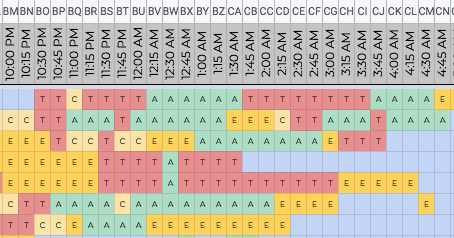

The last 18-months have been hard - for everyone. We have all been united in our misery, dealt with in our own unique ways. Some have come closer, some have drifted apart. I’m a numbers person, mostly. So, here’s a quantitive twist on common anecdotes - that have helped me stay sane.
15-minutes, documented
Last year was hard for me. I questioned every concept known to mankind - individual identity, marriage, motherhood, family, love, loyalty, trust, honesty, goals, ambitions, philanthrophy, religion and science itself. Everything that life could stand for.
And in all that darkness, sometimes, it was hard to continue - to keep trying to find a way, when I felt so lost. The ROI on the seemingly unending, directionless search for meaning, which quite possibly didn’t exist - was not promising.
So, as with all problems, I hit Google and ended up on a self-help website - which told me to take it only 5 minutes at a time. Amazingly, that did seem to work.
Hence, I called upon the sublime powers of Excel. Here’s a glimpse of one of the more acceptable chunks of my life.

What you are looking at is a part of my life, broken down into 15-minute, logged by category. (A - Action, T - Thinking, E - Entertainment, C - Chores). Yes, I’m weird.
But it allowed me evaluate my happiness and unhappiness - empirically.
Feeling directionless? Sure, I haven’t worked taken any actions related to goals that matter to me, in over 12 hours. Feeling confused? Obviously, I’ve been in bed, cooking up dreams for the past 4 hours.
Life is more physiological and physical, than we give it credit for. Yet, most of us, live it in our heads.
Documenting it, helps externalize and depersonalize it. Allows us to look at our own life, from outside.
Netflix builds for failures. So should we.
I failed spectacularly last year in numerous ways. You probably did too.
Maybe your relationship crashed and burned.
Maybe you got fired.
Maybe couldn’t do enough for your parents.
Maybe you miscarried and couldn’t protect your child.
Maybe your startup died.
Maybe your partner cheated on you.
Maybe you weren’t as smart as you thought.
Maybe you killed your plants, yet again.
And it hurt. Repeatedly. Like a white, hot iron in your brain, stabbing relentlessly, reminding you with every breath you took. And in your pain, you lost sight.
Well, that’s pain for you. You are supposed to lose sight. It is supposed to be significant - or else, how would you learn?
How would you learn that it is all just a statistic? Being born is a conditional probability. And so are most things that happen to you. Sure, you have some control, some blame to take - but to assume all responsibility is just narcissistic. And for things to happen exactly as you predict because of your experience - would be mathematically highly improbable. (If it does, congratulations, you might be on your way to becoming a prophet - please give me your number, before you get certified as God.)
Humans give too much importance to themselves. But we are all just systems, deployed in production - interacting with other systems. Systems, encoded with our unique experiences. Our responses, based on algorithms that we’ve being trained on.
So, what is pain? It’s the alert mechanism. It’s the freaking PagerDuty at 3 a.m, telling you that your system is going bonkers.
Maybe it is overloaded, and your capacity planning was inaccurate.
Maybe there’s an edge case, that you didn’t anticipate.
Maybe the queue is backed up, and your system is overwhelmed.
Maybe a Russian hacker has attacked your system and blown it to smithereens.
Either way, you don’t handle PagerDuty by questioning the universe. You fix the issue. And there’s always a fix. Patch, deploy, add to playbook, re-evalute for more robust solutions, earmark resources, work on it.
When you take away the humaness of pain, it reduces to being just an incident - a outage. And outages are normal. Outages make the system stronger, a bit more resilient, everytime they hit.
Try again, fail again, fail better. ~Samuel Beckett
Progress, is non-linear.
In thirty years of my life, I’d never managed to do a push-up. And it would annoy the hell out of me. So this pandemic, I decided to give it another try (probably my 10th). Only this time, instead of brute-forcing it - I decided to build upto it. At a rate of only 15-minutes at a time.
I didn’t set a goal - I just told myself that I would work on it for 15 minutes a day.
Here’s how it went,
Day 1: Recorded myself, my push-up looks weird, not right.
Day 2: Googled how to do a push-up correctly; Got a recipe: sqeeze back, tighten abs, press through the floor
Day 3: Reddit says strengthen core for push-ups; Let’s add hollow body planks to my routine, along-with modified push-ups
Day 4: My elbows look weird. Googled and fixed elbox positioning - Keeps elbows behind the middle finger and stop when shoulder blades retract.
Day 5 - Day 10: Continued with modified push-ups + hollow body planks
Day 11: My push-up still looks weird - my spine is all curve. Came across the concept of neutral spine. Added routines to practice that.
Day 12 onwards: Combination of the above, threw in the 30-day push-up challenge to the mix.
And somewhere around Day 20, I managed to do a decent push-up - with extremely shaky arms.
Here’s around Day 30, with less shaky arms…

Ever built a website? It sucks - till it doesn’t.
You add all the semantic HTML. It looks like a bad library website from the 90s. You divide it up into chunks. Add some CSS. Switch the colors. Add the fonts. Nada, still sucks.
Then you add a grid, margins and padding.
And suddenly, you have a beautiful website!
I realise now that most things work the same way.
Progress, is hardly ever linear. Maybe it’s a step function. Maybe it’s exponential.
Point is, you keep failing everyday. Keep being wrong everyday. And it all adds up. Till one day, you aren’t failing anymore.
Hey Jude
Ok, this has nothing to do with Math and everything to do with Paul McCartney’s smile. Warms my heart everytime - that’s love, I think?
Fine - love is never enough.
Anyway, cheers to Bill Davis (6:23) and the lyrics.
Hey Jude, don’t make it bad.
Take a sad song and make it better.
Remember to let her into your heart,
Then you can start to make it better.
Hey Jude, don’t be afraid.
You were made to go out and get her.
The minute you let her under your skin,
Then you begin to make it better.
And anytime you feel the pain, hey Jude, refrain,
Don’t carry the world upon your shoulders.
For well you know that it’s a fool who plays it cool
By making his world a little colder.